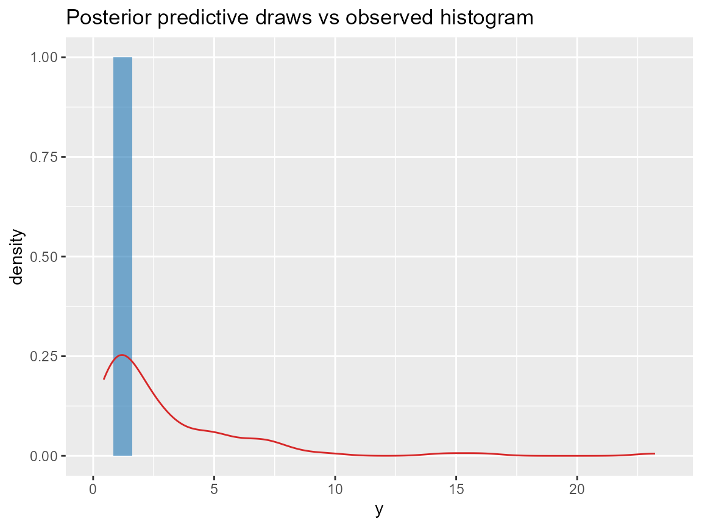

Prediction & exports
Source:vignettes/v08-prediction-and-exports.Rmd
v08-prediction-and-exports.Rmd
library(DPmixGPD)
library(nimble)
use_cached_fit <- TRUE
.fit_path <- function(name) {
path <- system.file("extdata", name, package = "DPmixGPD")
if (path == "") path <- file.path("inst", "extdata", name)
path
}
fit_small <- readRDS(.fit_path("fit_small.rds"))
library(ggplot2)
set.seed(3)
n <- 90
y <- sim_bulk_tail(n, tail_prob = 0.15)
bundle <- build_nimble_bundle(
y = y,
backend = "sb",
kernel = "normal",
GPD = TRUE,
J = 6,
mcmc = list(niter = 200, nburnin = 50, thin = 1, nchains = 2, seed = c(1, 2))
)
if (use_cached_fit) {
fit <- fit_small
} else {
fit <- run_mcmc_bundle_manual(bundle, show_progress = FALSE)
}
draws <- DPmixGPD:::.extract_draws_matrix(fit, drop_v = TRUE)
keep <- intersect(c("alpha", "threshold[1]", "tail_shape"), colnames(draws))
head(draws[, keep, drop = FALSE])
#> alpha
#> [1,] 3.340427
#> [2,] 3.340427
#> [3,] 2.526394
#> [4,] 1.904067
#> [5,] 1.904067
#> [6,] 1.834272
pp <- predict(fit, type = "sample", nsim = 200)
draws_df <- data.frame(value = pp$fit[, 1])
ggplot(draws_df, aes(x = value)) +
geom_histogram(bins = 30, fill = "#1f77b4", alpha = 0.6) +
geom_density(data = data.frame(y = y), aes(x = y, y = ..density..), color = "#d62728") +
labs(title = "Posterior predictive draws vs observed histogram", x = "y")
Posterior predictive draws overlayed on data histogram.
dir.create("reports", showWarnings = FALSE, recursive = TRUE)
quant_df <- predict(fit, type = "quantile", p = c(.5, .9, .99), y = NULL)
export_table <- data.frame(
tau = c(.5, .9, .99),
quantile = c(quant_df$fit)
)
knitr::kable(export_table, caption = "Quantile export for reporting")| tau | quantile |
|---|---|
| 0.50 | 2.444721 |
| 0.90 | 9.102755 |
| 0.99 | 10.154704 |
write.csv(export_table, file = "reports/quantiles.csv", row.names = FALSE)
recipes <- list(
"Quantile curve" = function(newdata) predict(fit, newdata = newdata, type = "quantile", p = c(.5, .9, .99)),
"Tail index surface" = function(newdata) predict(fit, newdata = newdata, type = "quantile", p = .995),
"Tail exceedance rate" = function(newdata, ygrid) predict(fit, newdata = newdata, type = "survival", y = ygrid)
)
recipes
#> $`Quantile curve`
#> function (newdata)
#> predict(fit, newdata = newdata, type = "quantile", p = c(0.5,
#> 0.9, 0.99))
#>
#> $`Tail index surface`
#> function (newdata)
#> predict(fit, newdata = newdata, type = "quantile", p = 0.995)
#>
#> $`Tail exceedance rate`
#> function (newdata, ygrid)
#> predict(fit, newdata = newdata, type = "survival", y = ygrid)
sessionInfo()
#> R version 4.5.1 (2025-06-13 ucrt)
#> Platform: x86_64-w64-mingw32/x64
#> Running under: Windows 11 x64 (build 26100)
#>
#> Matrix products: default
#> LAPACK version 3.12.1
#>
#> locale:
#> [1] LC_COLLATE=English_United States.utf8
#> [2] LC_CTYPE=English_United States.utf8
#> [3] LC_MONETARY=English_United States.utf8
#> [4] LC_NUMERIC=C
#> [5] LC_TIME=English_United States.utf8
#>
#> time zone: America/New_York
#> tzcode source: internal
#>
#> attached base packages:
#> [1] stats graphics grDevices datasets utils methods base
#>
#> other attached packages:
#> [1] ggplot2_4.0.1 nimble_1.4.0 DPmixGPD_0.0.8
#>
#> loaded via a namespace (and not attached):
#> [1] sass_0.4.10 future_1.68.0 generics_0.1.4
#> [4] renv_1.1.5 lattice_0.22-7 listenv_0.10.0
#> [7] pracma_2.4.6 digest_0.6.39 magrittr_2.0.3
#> [10] evaluate_1.0.5 grid_4.5.1 RColorBrewer_1.1-3
#> [13] fastmap_1.2.0 jsonlite_2.0.0 scales_1.4.0
#> [16] codetools_0.2-20 numDeriv_2016.8-1.1 textshaping_1.0.1
#> [19] jquerylib_0.1.4 cli_3.6.5 rlang_1.1.6
#> [22] parallelly_1.46.1 future.apply_1.20.1 withr_3.0.2
#> [25] cachem_1.1.0 yaml_2.3.10 tools_4.5.1
#> [28] parallel_4.5.1 coda_0.19-4.1 dplyr_1.1.4
#> [31] globals_0.18.0 vctrs_0.6.5 R6_2.6.1
#> [34] lifecycle_1.0.5 fs_1.6.6 htmlwidgets_1.6.4
#> [37] ragg_1.5.0 pkgconfig_2.0.3 desc_1.4.3
#> [40] pkgdown_2.1.3 bslib_0.9.0 pillar_1.11.1
#> [43] gtable_0.3.6 glue_1.8.0 systemfonts_1.2.3
#> [46] xfun_0.52 tibble_3.3.0 tidyselect_1.2.1
#> [49] knitr_1.50 farver_2.1.2 htmltools_0.5.8.1
#> [52] igraph_2.2.1 labeling_0.4.3 rmarkdown_2.30
#> [55] compiler_4.5.1 S7_0.2.1